10. týden: Wildcard
Během desátého týdne bylo úkolem vyzkoušet si stroj nebo techniku, se kterou jsme dosud nepracovali.
Soustružení dřevěné číše
Můj bratr se dříve chtěl stát truhlářem. Přestože se dnes věnuje jiné profesi, zůstal nám doma soustruh, různé truhlářské nářadí a kupa dřeva. Rozhodl jsem se toho využít a vyrobit dřevěnou číši.
Číši jsem rozdělil do dvou částí - vrchní kalich s dutinou a spodní stojan. Rozhodl jsem se je vyrobit zvlášť z odlišných druhů dřeva a následně je spojit pomocí lepidla a vrutu.
Příprava materiálu a uchycení
Začal jsem výběrem dřeva pro vrchní část. Zvolil jsem velký světlý blok, pravděpodobně se jedná o smrk nebo borovici.
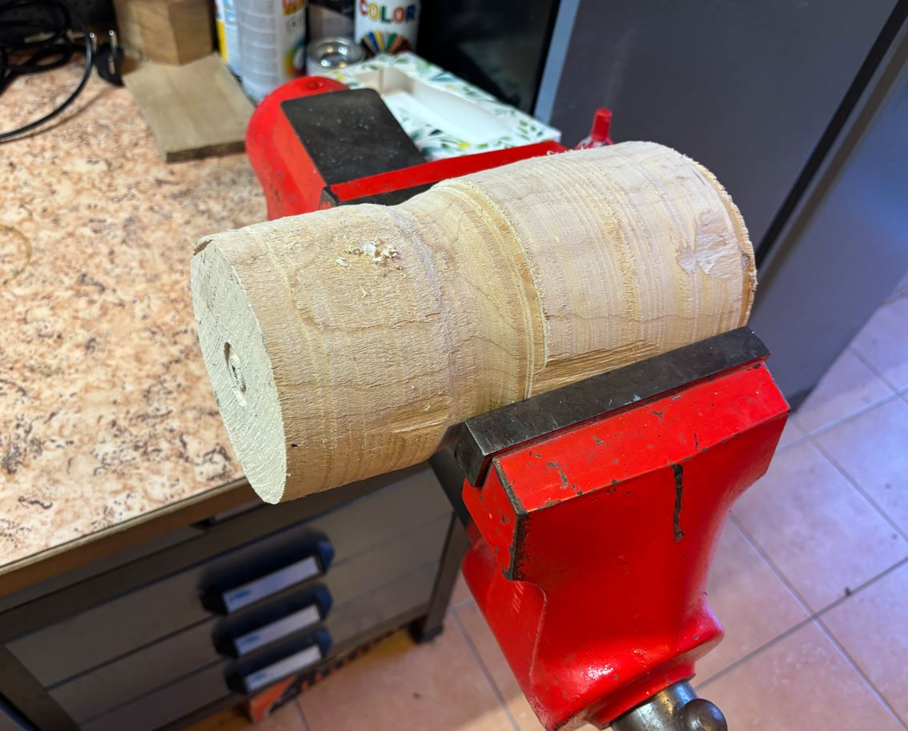
Dřevo jsem uchytil do svěráku a pilkou odřízl válec o průměru 12 cm a výšce 8 cm. Abych mohl polotovar upnout k hřídeli soustruhu, předvrtal jsem si 3 mm otvory a válec jsem přišrouboval k lícní desce. Používám vrtačku Makita HP2050.
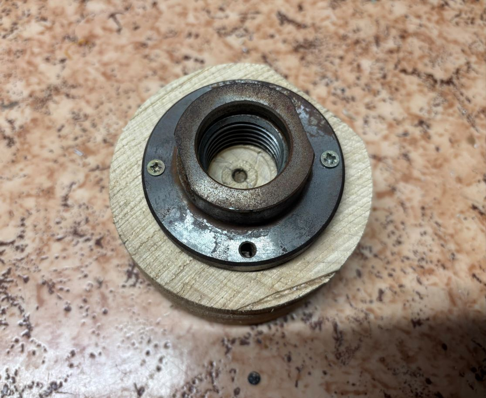
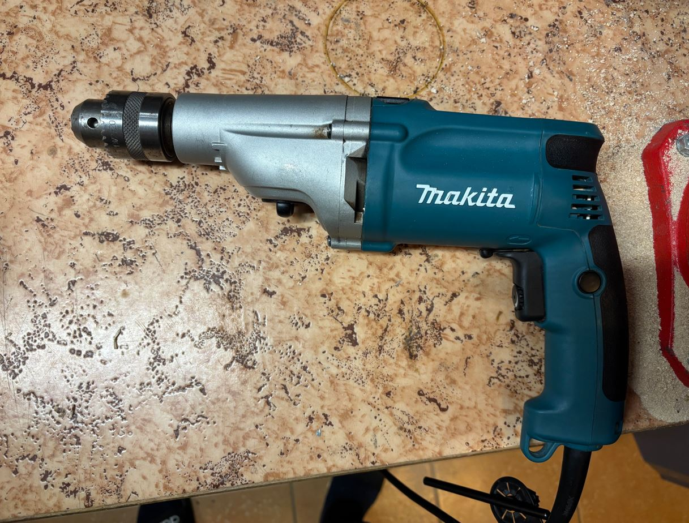
Bezpečnost při práci
Aby nehrozilo zachycení oděvu rotujícími částmi soustruhu, měl jsem krátký rukáv a přiléhavé oblečení. Po celou dobu jsem měl nasazené ochranné plastové brýle. Během broušení jsem navíc používal respirátor, abych vdechoval co nejméně jemného prachu.
Obrábění na soustruhu
Pro samotnou výrobu jsem použil soustruh Record Power DML250. K dispozici jsem měl následující struhy:
- Kosý škrabák: vytváření rovných ploch a ostrých rohů.
- Oblý škrabák: zaoblené plochy a vytváření dutin.
- Hrotový škrabák: dekorativní drážky.
Protože jsou všechny tyto nástroje určené spíše k dokončování a vyhlazování, byla fáze hrubování (odebírání většího množství materiálu) velmi zdlouhavá.

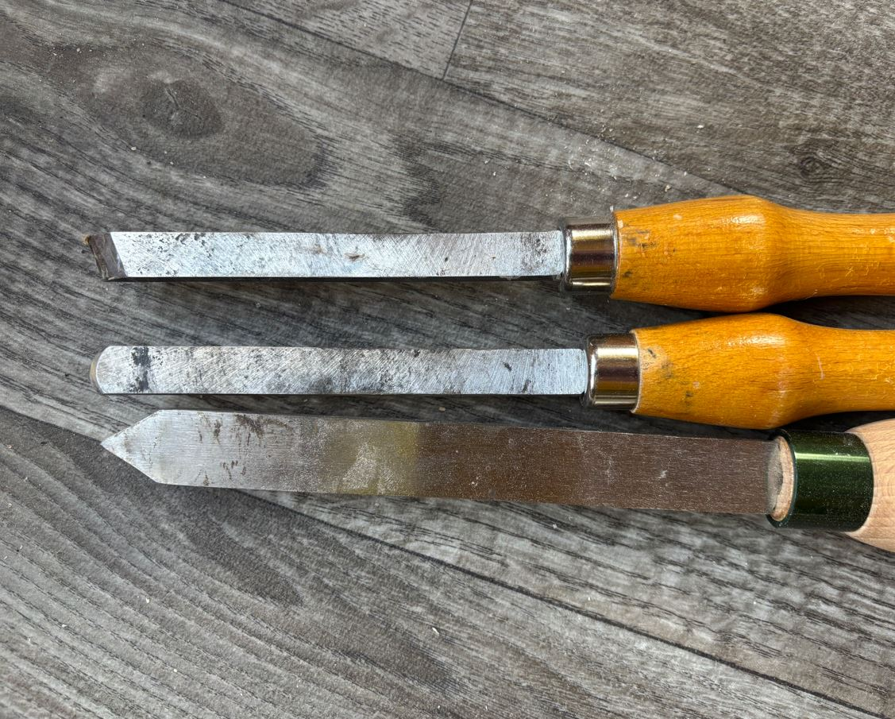
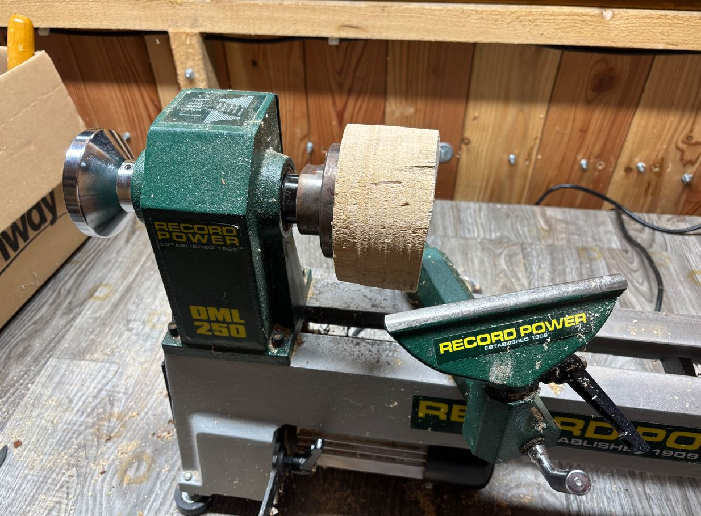
Prvním krokem bylo přeměnit hrubý blok na dokonalý válec. Postupně jsem z vnějšku ubíral materiál tak dlouho, dokud nezmizely všechny zářezy a škrábance a povrch nezůstal rovný a hladký.
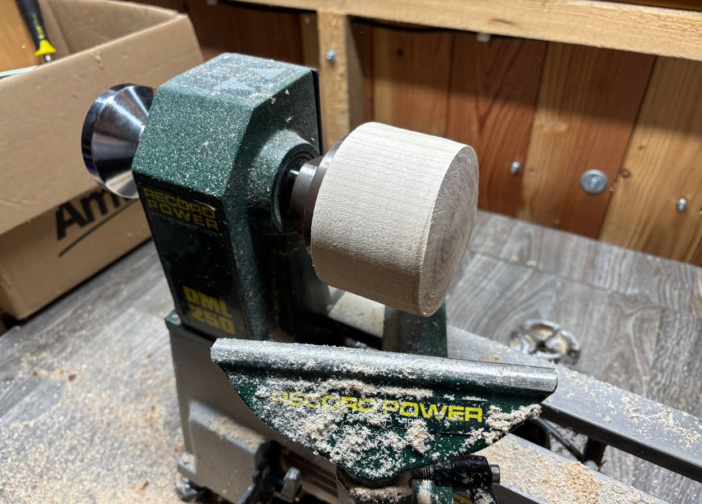
Následně jsem přešel k tvarování vnější části číše. Pomocí oblého škrabáku jsem vytvořil zaoblený spodek kalichu.
V místě, kde bylo dřevo dočasně přišroubované k lícní desce, bude později vyhloubena hlavní dutina. Abych mohl číši zevnitř vyhloubit, musel jsem ji tedy později uchytit z opačné strany. Vytvořil jsem proto na zaobleném spodku tzv. upínací vybrání pro čelisťové sklíčidlo.
Ještě před vyjmutím ze soustruhu jsem celý vnější povrch důkladně obrousil (použil jsem brusný papír se zrnitostí postupně od P150 až po P600).
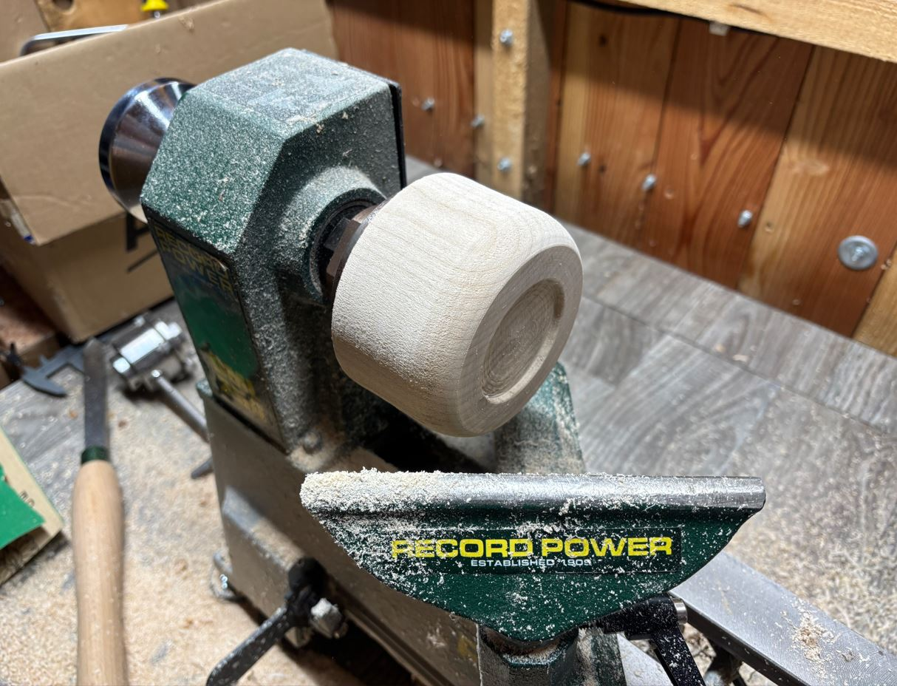
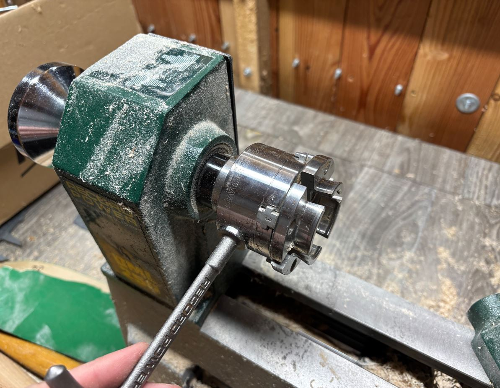

Hloubení dutiny kalichu se ukázalo jako nejnáročnější část projektu. Běžně se k tomuto účelu používá speciální struh na misky, ten jsem ale bohužel neměl, takže proces trval velmi dlouho. Většinu vnitřního materiálu jsem postupně odebíral pomocí oblého škrabáku. Na následné zarovnání vnitřních stěn posloužil kosý škrabák.
Kvůli chybějícímu vybavení se mi nepodařilo dno dutiny dokonale vyhladit - chyběl mi nástroj, který by do tohoto místa dosáhl pod správným úhlem.
Během obrábění jsem tloušťku stěn a hloubku dutiny kontroloval pouze dotykem a vlastním pocitem. Skrz jsem se naštěstí neprovrtal a tloušťka stěn se zdá být rovnoměrná.
Pro stojan číše jsem vybral pro hezký vizuální kontrast tmavší dřevo z ovocného stromu, pravděpodobně třešně. Postup jeho soustružení byl totožný jako u vrchní části. Na jeho povrchu jsem hrotovým škrabákem vytvořil malé dekorativní drážky.
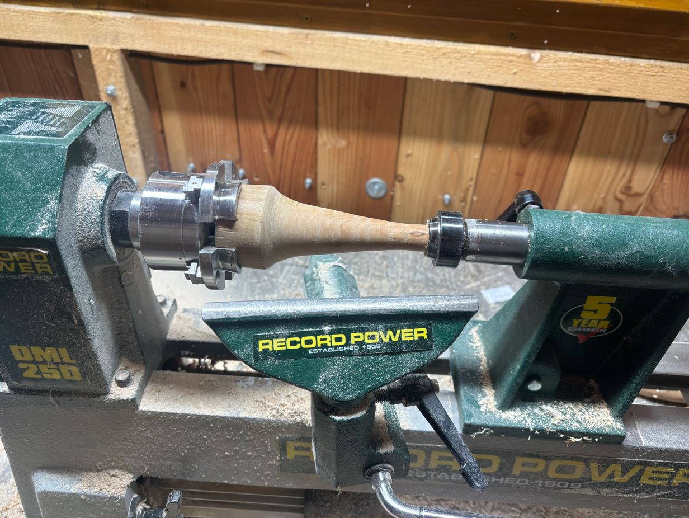
Kompletace a povrchová úprava
Hotové části jsem spojil lepidlem na dřevo, předvrtal 3 mm vrtákem a následně sešrouboval. Bohužel se mi vrut nepodařilo dokonale vycentrovat, takže je číše lehce nakřivo. Zároveň mi při montáži sklouzl vrták a poškodil povrch uvnitř dutiny.

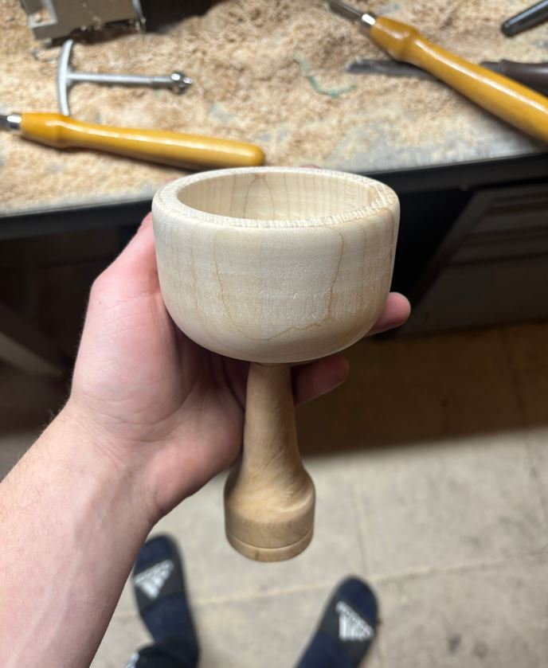
Aby bylo dřevo odolnější a vynikly jeho přirozené barvy a vzory, ošetřil jsem celou číši food-safe olejem, který je bezpečný pro styk s potravinami.
Nejprve jsem nanesl štědrou vrstvu oleje a rozetřel ji hadříkem. Zhruba po půlhodině jsem nevstřebaný zbytek setřel a nechal povrch 12 hodin schnout. Poté jsem stejným postupem aplikoval ještě druhou vrstvu.

Výsledek mé práce na soustruhu:
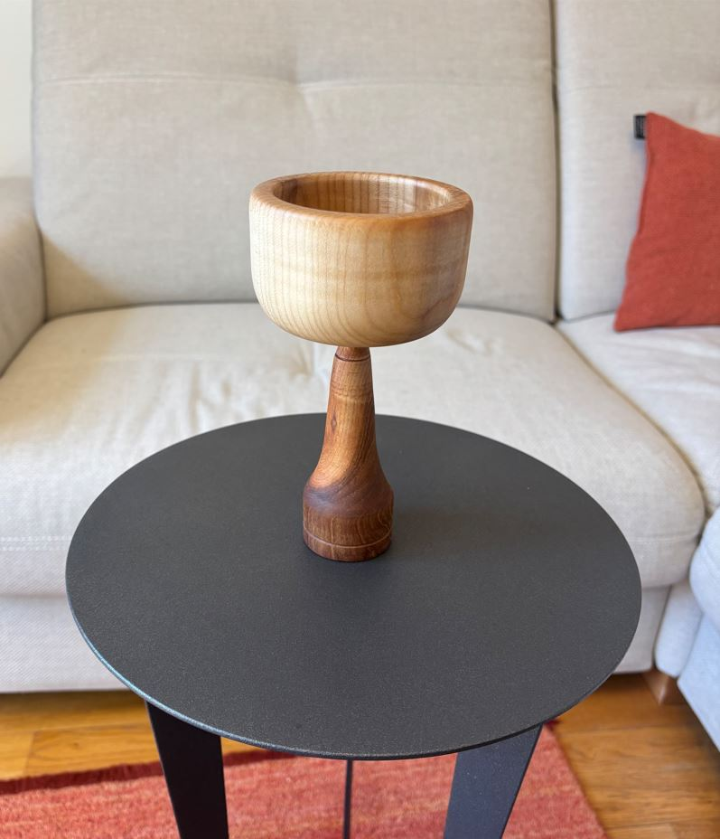